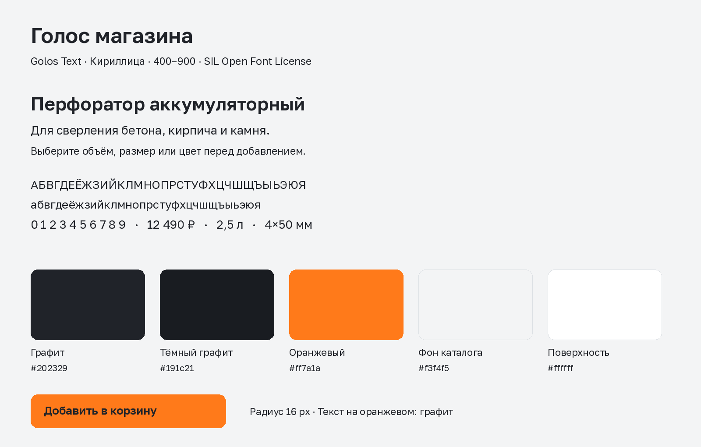

Этап 2 · Локальный просмотр · Это комплект ассетов, не макет сайта
Центр-Строй.
Материалы для будущего магазина
Авторская SVG-надпись по вывеске, тихий узор из инструментов, кириллический шрифт, 30 иконок и 100 предметных фотографий в восьми категориях. Все файлы открываются локально.
Надпись и орнамент
Новые силуэты инструментов крупным планом
Шрифт и цвет

Яркий оранжевый на графитовом: контраст 6,04:1. Для мелкого оранжевого текста на белом подготовлен более тёмный оттенок #b94c00.
Иконки Lucide
Фотографии товаров
Квадраты 960×960 и миниатюры 360×360, без изменения цвета или комплектации товара. Нажатие на фото открывает большой файл.
Фотографии взяты из официальных каталогов производителей. Они не выдаются за свободный фотосток; разрешение на публичное коммерческое использование не установлено. Источники и артикулы сохранены. Наличие этих моделей в самом магазине не подтверждено.
Герметики, пены и клеи 10